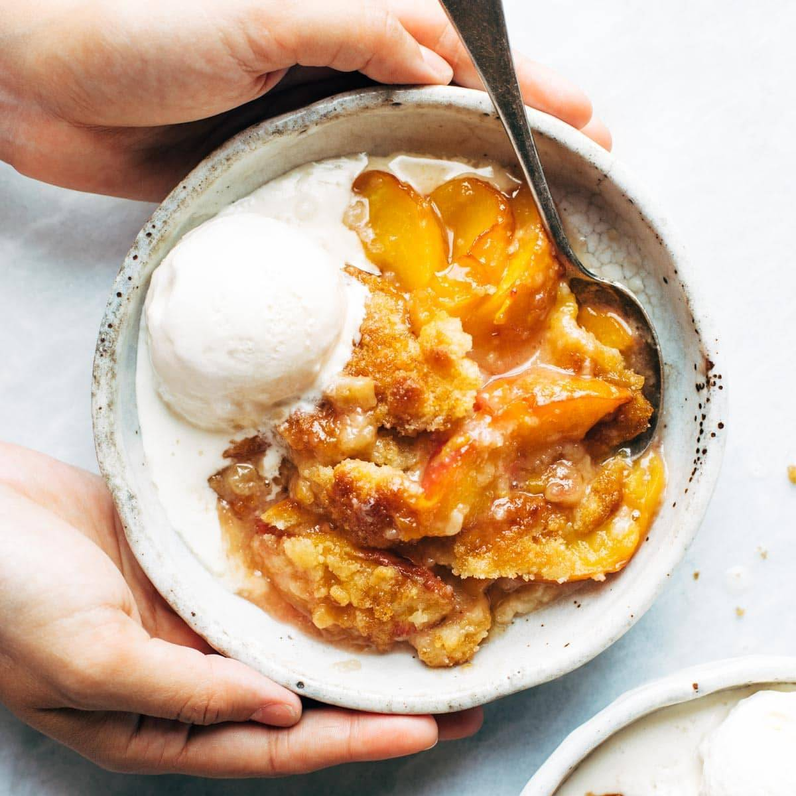

Peach Cobbler

The perfect summer sweet recipe that you can make! This peach cobbler recipe is riddled with sweetness, juiciness, and ripe fresh peaches that will definitly give you diabetes. This southern delicacy will have your mouth watering!
Ingredients
- Fresh peaches
- White sugar
- Brown sugar
- Ground cinnamon
- Ground nutmeg
- Fresh lemon juice
- Cornstarch
- All-purpose flour
- White sugar
- Baking powder
- Salt
- Unsalted butter
- Boiling water
Steps
- Gather all your ingredients and preheat oven to 425 degrees Fahrenheit.
- Combine peaches, white sugar, brown sugar, nutmeg, cinnamon, lemon juice, and cornstarch in large bowl and coat evenly. Pour into baking dish and back in oven for 10 minutes.
- Combine flour, white sugar, brown sugar, baking powder, and salt in large bowl. Blend butter until mixter is coarse. Stir in water.
- Remove peaches from oven and drop spoonfuls of topping over them.
- Mix white sugar and cinnamon together in small bowl and sprinkle over the entire cobbler.
- Bake in preheated oven until topping is golden for 30 minutes.